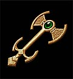
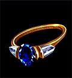
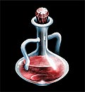

目次 > ゲームについて > 日本Falcom 攻略 > Ys > アイテム一覧 > イベントアイテム
らんの眼
Ys(イース) Ys Eternal(VE)/Ys Complete
| 概要 | 情報 | ボス戦 |
| 敵キャラ一覧 | アイテム一覧 | 攻略チャート |
| 地図 | ダウンロード | イースの本 |
| 経験値表 | 地名一覧 | タイムアタック |
| ETERNAL / Complete 比較 | キャラクター一覧 | |
| Ys 攻略へ | 目次へ戻る |
| [ 装備品 ] [ イベントアイテム ] |
| 名前 | 画像 | 入手場所 | 用途 |
| イースの本 ハダルの章 | サルモン神殿 地下3 階 | 読み物 | |
| イースの本 トバの章 | サラ宅 | 読み物 | |
| イースの本 ダビーの章 | 廃坑 最奥(第三層) | 読み物 | |
| イースの本 メサの章 | ダームの塔 8階 | 読み物 | |
| イースの本 ジェンマの章 | ダームの塔 14階 | 読み物 | |
| イースの本 ファクトの章 | ダームの塔 25階 | 読み物 | |
| 宝箱の鍵 | サルモン神殿 地下2 階 | エステリアの鍵のかかった宝箱をすべて開けることがきます。 | |
| 牢屋の鍵 | サルモン神殿 地下2階 | サルモン神殿B1 にある牢屋の扉を開ける鍵です。 | |
| 神殿の鍵 | ゼピック村 | サルモン神殿 1階 の扉を開ける鍵。 | |
| 象牙の鍵 |  | サルモン神殿 地下3 階 | サルモン神殿地下 3 階の扉を開ける鍵です。 |
| 名前 | 画像 | 入手場所 | 用途 |
| 大理石の鍵 | サルモン神殿 | サルモン神殿地下3 階の扉を開ける鍵です。 | |
| ダームの鍵 | 廃坑 第三層 | 廃坑 第三層の扉を開ける鍵です。 | |
| クリスタル | サラ宅 | 神殿の女神像に変化をもたらす道具。 | |
| ロダの種 | 廃坑 第一層 | 食べることで不思議な力が身につくという果実。 しかも、非常においしいらしい。 |
|
| 銀の鈴 | サルモン神殿 地下2 階 | ゼピック村の宝。見つけたら、村長に返してあげましょう。 | |
| 銀のハーモニカ | 廃坑 第二層 | レアが探しているハーモニカ。見つけたら、彼女に返すしてあげましょう。 ちなみに、アドルも吹くことができます(だから何と聞かないで)。 |
|
| 偶像 | ダームの塔 地下1 階 | ラーバが探している偶像。使用すると気配を消すことができる便利な道具。 しかし、上級の魔物には通用しないらしい。 |
|
| ロッド | ダームの塔 14階 | ダームの塔にある鏡でワープができる。 | |
| メガネ | ラドの塔 2階 | かけるだけでイースの書を読むことができるようになる。 | |
| ブルーアミュレット | ダームの塔 11階 | ジェンマ家に伝わる宝。魔よけであり、ダームの塔 25階への扉を開けるための鍵ともなっています。 | |
| 名前 | 画像 | 入手場所 | 用途 |
| 名前 | 画像 | 入手場所 | 用途 |
| ルビー | サルモン神殿 1階 | 大粒のルビーがついた、装飾品。ピムの交換所で1200 Gold で売却できる。 | |
| サファイヤの指輪 |  | ピムの交換所 | サファイヤの指輪。ミネアの酒場でこれを探している人物がいるので、返したほうがいいかもしれない。 |
| ネックレス | サルモン神殿 地下1 階 | 金の首飾り。ピムの交換所で500 Gold で売却できる。 | |
| 金の台座 | 草原 | 非常に貴重な台座。本当に貴重な品で、ピムも探しており、2000 Gold で売却できる。 何の目的で作られたものなのかは、スーパーファミコン版のYS IV で明らかになります。 |
|
| ヒールポーション |  | ミネアの町クラーゼ病院 サルモン神殿 廃坑 ダームの塔 |
ジキタリスを煎じた飲み物。さまざまな病をたちどころに治すという。 ETERNAL では、1 個1000 Gold、Complete では1 個300 Gold でクラーゼの病院にて購入できる。 |
| ウイング | ピムの交換所 | 立ち寄った町や村へ一瞬で移動できる。しかし、洞窟や室内で使うと、危険。 ETERNAL では1 個2000 Gold、Complete では1 個300 Gold でピムの交換所にて購入できる。 |
|
| ハンマー | ダームの塔 8階 | 普通のハンマー。ある程度のものならば、簡単に壊すことができる。 | |
| ミラー | ピムの交換所 ダームの塔 2階 |
周囲の魔物の動きを停止させることができる。 数回使うと、壊れてしまうが、使う場所は少ないはず。 ETERNAL では1 個1000 Gold、Complete では1 個500 Gold でピムの交換所にて購入できる。 |
|
| マスクオブアイズ | サルモン神殿 地下1 階 | 装備すると普段見えるものが見えなくなり、見えなかったものが見えてくるという。 魔物が徘徊する場所で使用するのは危険だが、隠し通路を見つけることができれば、大きな見返りも期待できるかもしれない。 |
|
| ブルーネックレス | ダームの塔 3階 | 強力な魔よけ。あらゆる邪を打ち消すために、ダームの塔では重宝します。 「EVEL RING」を装備したいときは、これを一緒に使用しないと何もできずに死んでしまうので、忘れずに。 |
|
| 名前 | 画像 | 入手場所 | 用途 |
| ベスティアリーポーション | 草原 | 真っ青な薬。飲むと神通力により敵のステータスがわかるようになります。しかし、敵のステータスを全て知るには、何体も倒す必要があります。 | |
| 紙切れ | 草原 | 古代の文字で、数行の文章が書かれています。ただの紙切れだが、鍵をかけた宝箱に保管されているので気になるところ。用途は情報を参照してください。 | |
| 名前 | 画像 | 入手場所 | 用途 |
| [ 装備品 ] [ イベントアイテム ] |
| 概要 | 情報 | ボス戦 |
| 敵キャラ一覧 | アイテム一覧 | 攻略チャート |
| 地図 | ダウンロード | イースの本 |
| 経験値表 | 地名一覧 | タイムアタック |
| ETERNAL / Complete 比較 | キャラクター一覧 | |
| ページ上部へ | Ys 攻略へ | 目次へ戻る |